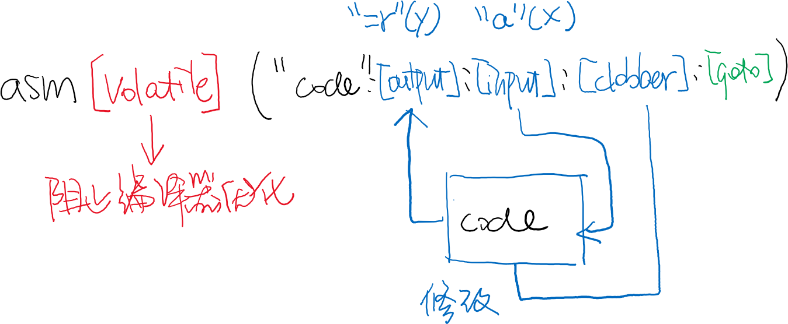

public: True class: center, middle # 代码选讲与中断 蒋炎岩 <jyy@nju.edu.cn> 南京大学计算机软件研究所 --- # 概述 > 自底向上代码选讲 --- class: center, middle # 机器代码 --- # AbstractMachine：机器代码 C 代码 (Turing Machine) 只能做 “计算” * 调用硬件功能，必须通过汇编代码 ---- AbstractMachine 代码中的两种汇编调用： * `.S` 文件 (经过汇编器后链接) * inline assembly (`x86.h`) --- # Inline Assembly [Inline assembly](https://gcc.gnu.org/onlinedocs/gcc/Using-Assembly-Language-with-C.html) 对编译器来说是 “黑盒子” * 指定输入/输出，由编译器调度 * RTFM! ---- .center[] --- # Inline Assembly (例子) ```c // x86.h static inline uint8_t inb(int port) { uint8_t data; asm volatile ("inb %1, %0" // 格式字符串，类似printf : "=a"(data) // output, %ax : "d"((uint16_t)port)); // input, %dx return data; } ``` ---- Q: .green[为什么用 `static inline`？是否需要 `volatile`？] ```c void foo(int n) { for (int i = 0; i < n; i++) { inb(0x60); } } ``` --- # Assembly Code: 中断入口 ```assembly .globl vecsys; vecsys: pushl $0x80; jmp asm_trap .globl vectrap; vectrap: pushl $0x81; jmp asm_trap .globl irq0; irq0: pushl $32; jmp asm_trap .globl vecnull; vecnull: pushl $-1; jmp asm_trap # | asm_trap: # | pushal #----------------+ | pushl $0 #-----------+ | | pushl %esp #------+ | | | call irq_handle # | | | | addl $4, %esp #---+ | | | addl $4, %esp #------+ | | popal #-----------------| | addl $4, %esp #---------------+ iret # _Context* __am_irq_handle(_Context *c) { # _Context *next = c; # if (user_handler) { ``` --- # x86-nemu 中断处理 .center[<img src="/static/wiki/ics/2019/img/x86-stack.jpeg" width="600px"/>] --- class: center, middle # C 代码 --- # C 代码的语义 C 语言有 well-defined 语义 (假设 UB-free) ```text P1; P2 => 顺序执行P1后执行P2 if (E) P1 else P2 => 先执行E，根据是否为0执行P1或P2 ... ``` ---- AbstractMachine 对这些语义进行了扩充 * `_io_read`/`_io_write` 能够读/写设备寄存器 * CTE/VME 对程序执行的行为造成很大影响 --- # CTE: 上下文管理 程序按顺序执行指令流： * <math> i_1 \to i_2 \to \ldots \to i_n </math> * 执行 `_yield()` 后 <math> i_n \to \textrm{YIELD} </math> * 外部中断发生后 <math> i_n \to \textrm{INTERRUPT} </math> * yield/interrupt 会导致一次上下文保存 (`_Context`) * 这个 `_Context` 可以被保存到内存中 * 在 `handler` 中返回保存的 `_Context` 能恢复执行流 <math>i_n \to i_{n+1} \to \ldots</math> --- # VME: 虚拟内存 (下学期详细解释) --- class: center, middle # 分时多线程 --- # 分时多线程的实现 AbstractMachine 上的 “嵌入式操作系统”：[thread-os.c](/static/wiki/os/2019/demos/thread-os.c) * 中断驱动下的线程切换 ---- ```c _Context *interrupt(_Event ev, _Context *ctx) { if (current) current->context = *ctx; // save context if (!current || current + 1 == &tasks[LENGTH(tasks)]) { current = &tasks[0]; // back to the first task } else { current++; } return & current->context; } ```